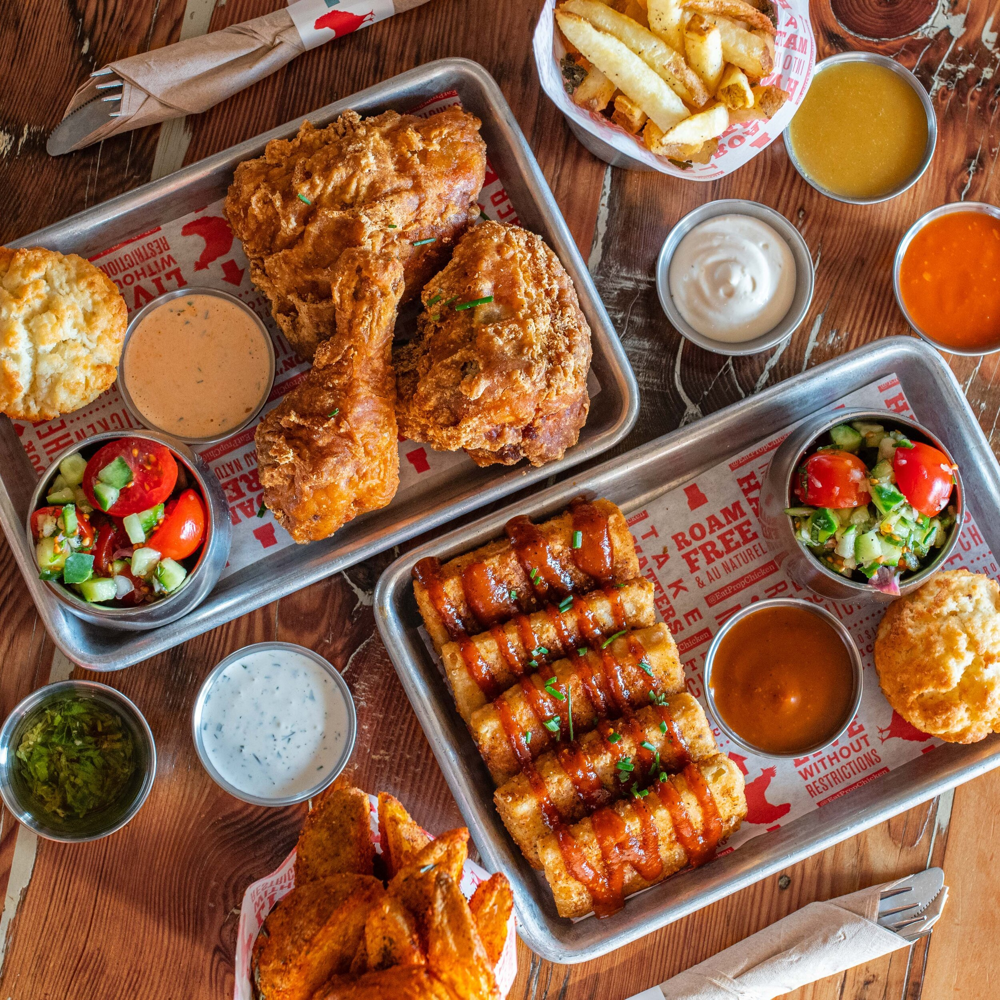
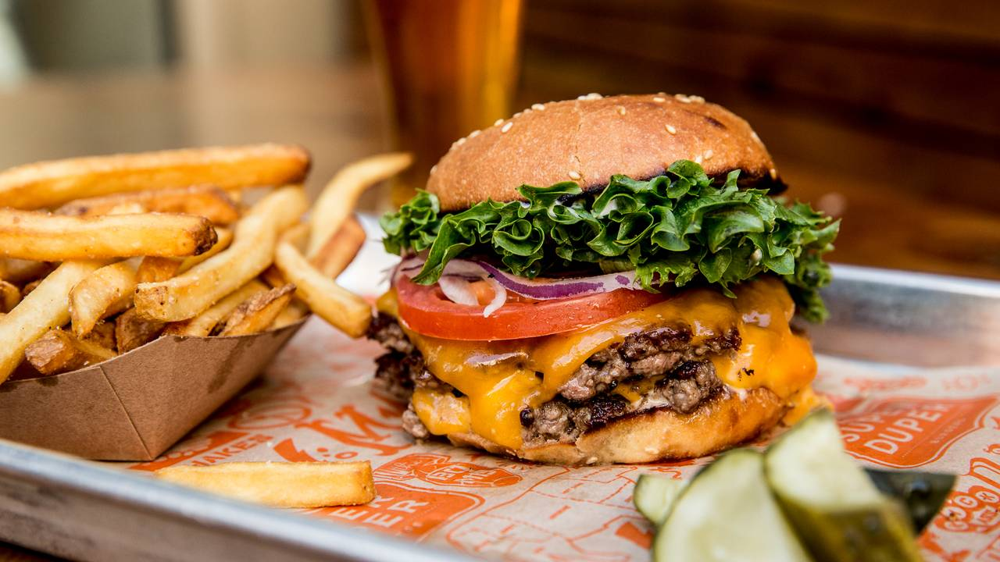
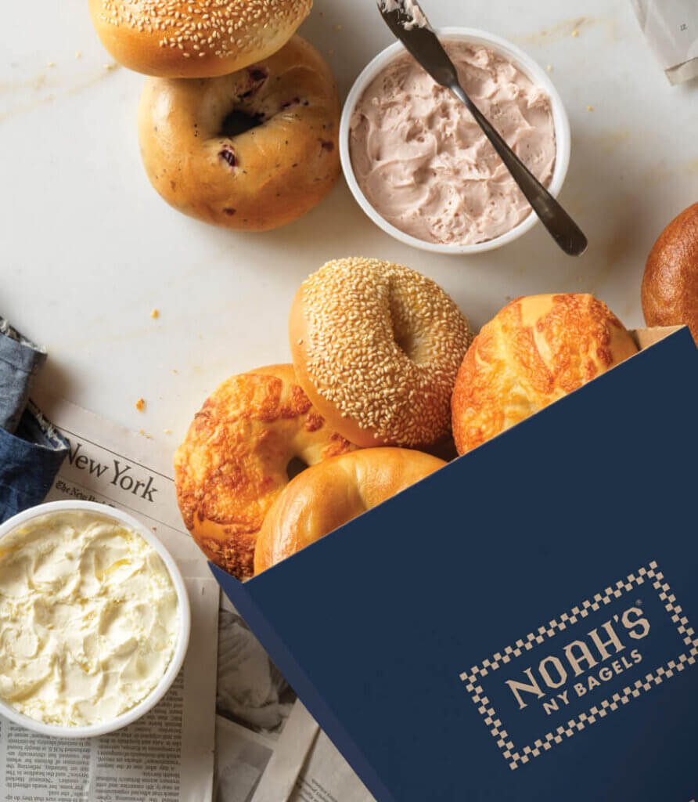

Here are some casual places I love eating at. I'm in and out in under 45 minutes, but i never leave with an empty stomach.
Proposition Chicken:
Proposition Chicken is one of my all time favorite casual restaurants. I hear they have great chicken, but my personal favorites are the crispy tofu, potato wedges, and brussel sprouts.

Super Duper:
Super Duper is a great place to get some food. They have multiple locations in San Francisco and Marin. I especially love their dipped ice cream cones.

Noah's Bagels:
Noah's has the best bagels in the city. They are always so so fresh and delicious. My personal favorite is the sesame bagel, but they also have great bagel sandwiches.

Chipotle:
Chipotle is my favorite restaurant of all time. I always get a bowl with beans, rice, guacamole, corn salsa, medium salsa, and chips. Their food is so delicous and they also have really good and clean ingredients. I will never stop loving Chipotle.